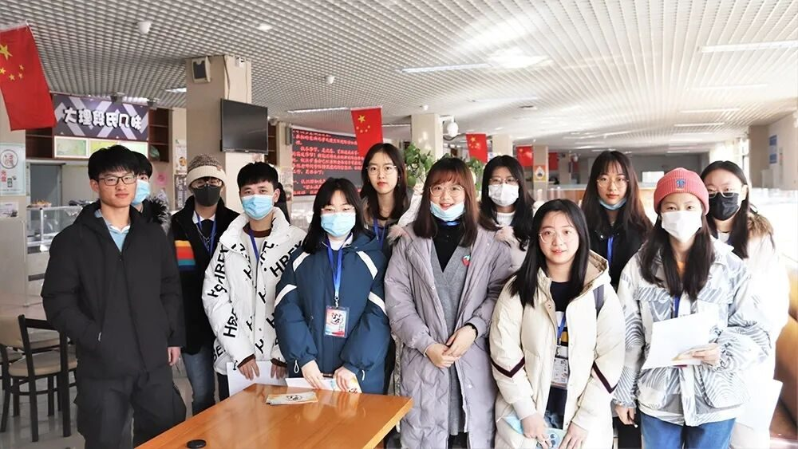
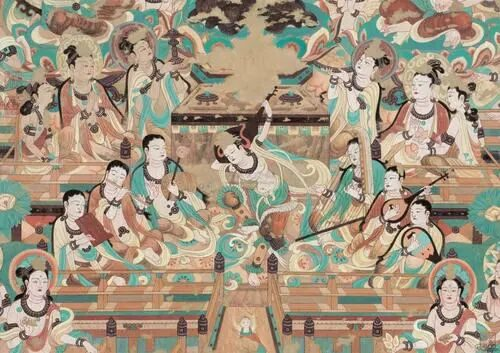
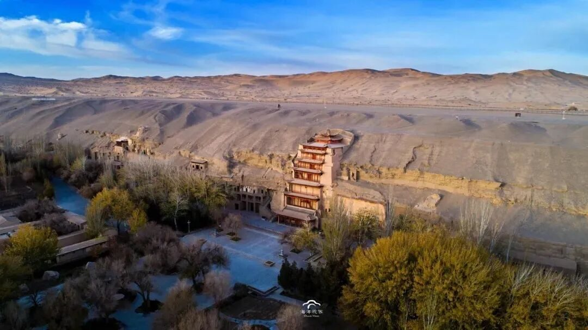
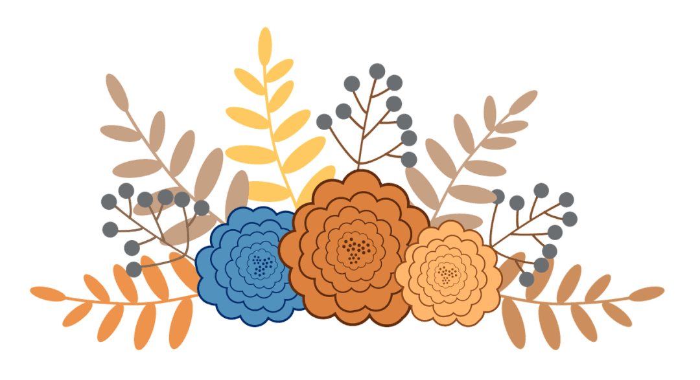

【煌然成篇·十】行者，在路上

华夏文明，悠悠千年
可若想找一个地方能
“行五十步穿越百年，
行百步穿越千年”
那一定是
敦煌
……
在这次的调研之前，我对敦煌的认知都来源于网络及影视作品。我知道敦煌很美，莫高窟的壁画石雕、沙漠之眼月牙泉、“沙鸣不绝”的鸣沙山、春风不度玉门关。在这里，曾经有无数的旅人游子用脚步丈量了中华文明的辉煌，见证了一个璀璨的时代。佛陀绘满了四方画壁梵音响彻了西北边陲。敦煌的美，交融而盛大，漫长的时光带不走这里的厚重，人类最璀璨历史文明在此交汇。

这次的调研，虽因疫情，不能奔赴敦煌，切身领略敦煌的种种大美，却也在这次线上调研中了解诸多敦煌背后的人和事。敦煌是坎坷的，历经劫难，莫高窟曾差一点遭遇灾难。张大千、常书鸿、段文杰到今天的樊锦诗，一代代“敦煌人”筚路蓝缕，初心不改，用70余年时间把中古时代的繁华之地再现于世人面前。

荣主任和吴老师是这次线上调研中我们采访到的两位敦煌博物馆工作人员，在采访过程中，即使隔着屏幕，我也能从言谈中感受他们的专业素养和对敦煌、对敦煌文化发自内心的热。


他们是敦煌文化的守护人之一，他们平凡，他们也伟大。他们守住了这片精神家园，使之生生不息，薪火相传。纵然时代日新月异，文化传承人皆初心不改。正是因为有他们，我们的文化才得以于岁月的沧海桑田之下幸存；正是因为有他们，我们中华文化才有了欣欣向荣的新现象。如今，我们重温丝路，追寻前辈足迹，被先辈们的淡泊、奉献、担当所深深感染着。

我想，文化的传达所需，应始于亲身体验的认同感和发自内心的归属感。这次行者无疆·聆谂丝韵给了我许多感动，行者们在这里相遇，在这里共同前行，为文化的传递尽自己微薄之力。在敦煌这个美丽的地方，与美丽的行者们邂逅，才是最美丽的故事。行者之道千万里不知所止，那便止于无疆罢。
来源 | 行者无疆实践团
文字 | 米鑫
排版 | 张清雅
审核 | 康艳虎 张清雅
行者无疆实践团
QQ：2758025831

随行者一起认识世界
长按二维码